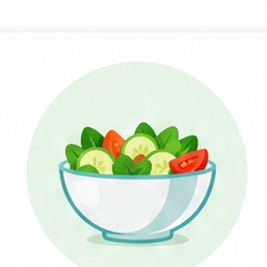
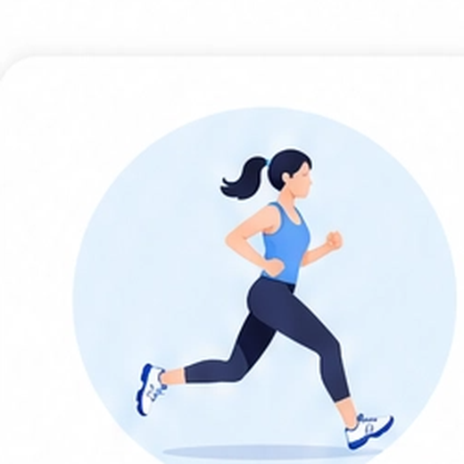
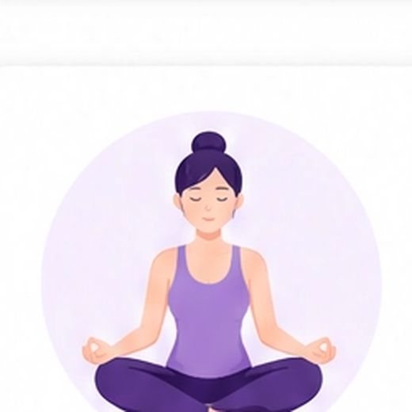

饮食建议
- 01增加优质蛋白摄入：鱼类、豆制品、鸡蛋、瘦肉
- 02补充 Omega-3 脂肪酸：三文鱼、亚麻籽、核桃等
- 03多摄入十字花科蔬菜：西兰花、花椰菜、卷心菜等，帮助肝脏代谢雌激素
- 04增加膳食纤维：全谷物、蔬菜、水果，促进肠道健康
- 05减少高糖、高脂肪及加工食品摄入，避免激素波动
女性激素平衡评估健康管理报告 | 第06/08页



本方案基于您的检测结果和健康状况制定，请结合自身情况执行，并定期复查，持续关注健康。